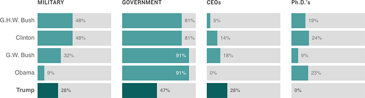

What Types Of Experience Are On Cabinet Members’ Resumes?
This chart counts up the sorts of experience different presidents’ Cabinet members have had on their resumes. We tallied the number of Cabinet members who have had any type of military or political experience, as well as the number who have served as CEOs and the number who have Ph.D.’s. This means some categories can overlap; many people have both military and government experience, for example.
